หมวดซอฟต์แวร์ :
สนับสนุนโดย :
พัฒนาเว็บ
Drupal
Drupal เป็นซอฟต์แวร์บริหารจัดการเนื้อหาเว็บ ที่ใช้งานได้ง่ายโดยไม่จำเป็นต้องมีความรู้ทางเทคนิคมากนัก สามารถสร้าง URL ที่เหมาะสมกับ search engine ได้ในตัว Drupal ออกแบบมาเพื่อเป็นเว็บชุมชนขนาดใหญ่ สมาชิกในเว็บไซต์ของคุณสามารถเขียนบล็อกส่วนตัว และสนทนาผ่านเว็บบอร์ดได้ทันที ความสามารถด้าน RSS ถูกรวมเข้ามาใน Drupal ไม่ว่าคุณจะสร้างเนื้อหาแบบใดในเว็บไซต์ก็ตาม Drupal จะสร้าง RSS Feed ให้คุณโดยอัตโนมัติ ทางผู้พัฒนา Drupal ได้ออกรุ่นอัพเดตด้านความปลอดภัยอย่างต่อเนื่องและทันท่วงทีอยู่เสมอ นอกจากความสามารถตามมาตรฐานแล้ว Drupal ยังมีโมดูลเพิ่มเติมความสามารถอีกเป็นจำนวนมาก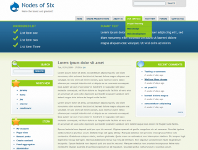
{kind=link}
{kind=link}
Filezilla
โปรแกรม FTP client และ server ที่ทำงานได้เร็วและเสถียร มาพร้อมความสามารถที่เพียบพร้อม และ inteface ที่เข้าใจง่าย สามารถ upload/download ต่อจากของเดิมหากการเชื่อมต่อถูกตัด มีการจัดการ site การรองรับ SSL และSFTP พร้อมทั้งระบบจัดคิว file ที่ยืดหยุ่น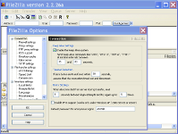 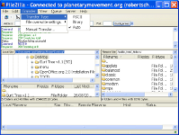
{kind=link}
{kind=link}
Joomla
ระบบบริหารจัดการเนื้อหาเว็บไซต์ (Content Management System หรือ CMS) ระบบหนึ่งที่ได้รับความนิยมมากที่สุดในปัจจุบัน สามารถปรับแต่งรูปแบบหน้าเว็บได้ตามต้องการ พร้อมทั้งมีฟังก์ชันให้ใช้งานมากมาย เช่น จัดการสร้างเนื้อหาให้กับเว็บไซต์ หรือสร้างโพลสำรวจความคิดเห็น ปรัปแต่งเทมเพลต และอื่นๆ มั่นใจได้เลยว่าคุณสามารถสร้างเว็บไซต์ที่สวยงามได้ภายในพริบตา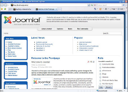 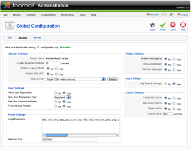
{kind=link}
{kind=link}
Kompozer
ระบบสร้างเนื้อหาเว็บที่ครบครัน Kompozer รวมเอาการจัดการไฟล์เว็บ (HTML), การแก้ไขเว็บแบบ WYSIWYG (What You See Is What You Get) และการแก้ไขรูปแบบด้วย stylesheet (CSS) เข้าไว้ด้วยกัน Kompozer ใช้ง่ายเหมือน word processor ที่เห็นผลลัพท์ของหน้าเอกสารในทันที เหมาะสำหรับผู้ใช้ที่ต้องการสร้างเว็บไซต์ที่สวยงาม โดยไม่จำเป็นต้องมีความรู้เรื่อง HTML หรือสำหรับมืออาชีพที่ต้องการประหยัดเวลาโดยสามารถดูผลลัพธ์และ HTML สลับกันได้เพียงสลับ tab และเมื่อสร้างเนื้อหาเสร็จแล้ว คุณก็สามารถเผยแพร่ขี้นไปบนเว็บไซต์ได้ในปุ่มเดียว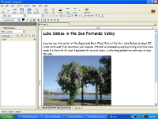 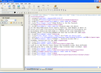
{kind=link}
{kind=link}
Simple Machine Forum
ระบบจัดการเว็บบอร์ด ซึ่งใช้งานง่าย สามารถอำนวยความสะดวกให้คุณได้ด้วยฟังก์ชันการใช้งานที่ครบครัน เช่น ระบบสมัครสมาชิก ระบบล๊อกอิน ระบบค้นหา ปฏิทิน การสร้างหมวดหมู่ให้กับกระทู้ต่างๆ การใช้งาน HTML Tag ร่วมกับการโพสต์กระทู้ เปลี่ยนธีมให้เหมาะสมกับเว็บไซต์ และอื่นๆ ซึ่งช่วยให้คุณสามารถสร้างเว็บบอร์ดได้เพียงแค่ปลายนิ้วสัมผัส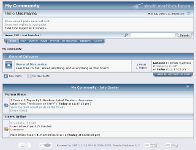 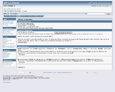
{kind=link}
{kind=link}
XAMPP
โปรแกรมติดตั้งที่รวมเอาซอฟต์แวร์โอเพนซอร์สคือ Apache, PHP, MySQL เอาไว้ใน package เดียว XAMPP ทำให้สามารถติดตั้งโปรแกรมทั้งหมดในขั้นตอนเดียว ไม่ต้องติดตั้งและปรับแต่งทีละตัว จึงเหมาะสำหรับผู้ที่เขียนโปรแกรม PHP และใช้ MySQL ทำให้สามารถพัฒนาโปรแกรมเว็บบน Windows และเห็นผลลัพท์ได้ทันทีโดยไม่ต้องอัปโหลด ติดตั้งง่าย พร้อมทำงานได้ทันทีที่ติดตั้งเสร็จ ทั้งยังมี add-on ที่เมื่อติดตั้งแล้วทำให้คุณได้เว็บ Joomla, Drupal และ Moodle พร้อมใช้ได้ในทันที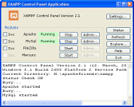 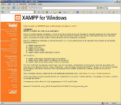
{kind=link}
{kind=link}